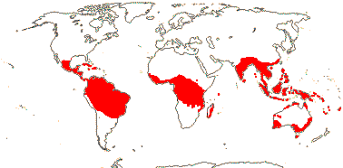

EMBRYOPSIDA Pirani & Prado
Gametophyte dominant, independent, multicellular, not motile, initially ±globular; showing gravitropism; acquisition of phenylalanine lysase [PAL], microbial terpene synthase-like genes +, triterpenoids produced by CYP716 enzymes, phenylpropanoid metabolism [lignans +, flavonoids + (absorbtion of UV radiation)], xyloglucans in primary cell wall, side chains charged; plant poikilohydrous [protoplasm dessication tolerant], ectohydrous [free water outside plant physiologically important]; thalloid, leafy, with single-celled apical meristem, tissues little differentiated, rhizoids +, unicellular; chloroplasts several per cell, pyrenoids 0; glycolate metabolism in leaf peroxisomes [glyoxysomes]; centrioles/centrosomes in vegetative cells 0, microtubules with γ-tubulin along their lengths [?here], interphase microtubules form hoop-like system; metaphase spindle anastral, predictive preprophase band + [with microtubules and F-actin; where new cell wall will form], phragmoplast + [cell wall deposition centrifugal, from around the anaphase spindle], plasmodesmata +; antheridia and archegonia jacketed, surficial; blepharoplast +, centrioles develop de novo, bicentriole pair coaxial, separate at midpoint, centrioles rotate, associated with basal bodies of cilia, multilayered structure + [4 layers: L1, L4, tubules; L2, L3, short vertical lamellae] (0), spline + [tubules from L1 encircling spermatid], basal body 200-250 nm long, associated with amorphous electron-dense material, microtubules in basal end lacking symmetry, stellate array of filaments in transition zone extended, axonemal cap 0 [microtubules disorganized at apex of cilium]; male gametes [spermatozoids] with a left-handed coil, cilia 2, lateral; oogamy; sporophyte multicellular, cuticle +, plane of first cell division transverse [with respect to long axis of archegonium/embryo sac], sporangium and upper part of seta developing from epibasal cell [towards the archegonial neck, exoscopic], with at least transient apical cell [?level], initially surrounded by and dependent on gametophyte, placental transfer cells +, in both sporophyte and gametophyte, wall ingrowths develop early; suspensor/foot +, cells at foot tip somewhat haustorial; sporangium +, single, terminal, dehiscence longitudinal; meiosis sporic, monoplastidic, MTOC [MTOC = microtubule organizing centre] associated with plastid, sporocytes 4-lobed, cytokinesis simultaneous, preceding nuclear division, quadripolar microtubule system +; wall development both centripetal and centrifugal, 1000 spores/sporangium, sporopollenin in the spore wall laid down in association with trilamellar layers [white-line centred lamellae; tripartite lamellae]; nuclear genome size [1C] <1.4 pg, main telomere sequence motif TTTAGGG, LEAFY and KNOX1 and KNOX2 genes present, ethylene involved in cell elongation; chloroplast genome with close association between trnLUAA and trnFGAA genes [precursors for starch synthesis], tufA gene moved to nucleus; mitochondrial trnS(gcu) and trnN(guu) genes +.
Many of the bolded characters in the characterization above are apomorphies of subsets of streptophytes along the lineage leading to the embryophytes, not apomorphies of crown-group embryophytes per se.
All groups below are crown groups, nearly all are extant. Characters mentioned are those of the immediate common ancestor of the group, [] contains explanatory material, () features common in clade, exact status unclear.
STOMATOPHYTES
Abscisic acid, L- and D-methionine distinguished metabolically; pro- and metaphase spindles acentric; sporophyte with polar transport of auxins, class 1 KNOX genes expressed in sporangium alone; sporangium wall 4≤ cells across [≡ eusporangium], tapetum +, secreting sporopollenin, which obscures outer white-line centred lamellae, columella +, developing from endothecial cells; stomata +, on sporangium, anomocytic, cell lineage that produces them with symmetric divisions [perigenous]; underlying similarities in the development of conducting tissue and of rhizoids/root hairs; spores trilete; shoot meristem patterning gene families expressed; MIKC, MI*K*C* genes, post-transcriptional editing of chloroplast genes; gain of three group II mitochondrial introns, mitochondrial trnS(gcu) and trnN(guu) genes 0.
[Anthocerophyta + Polysporangiophyta]: gametophyte leafless; archegonia embedded/sunken [only neck protruding]; sporophyte long-lived, chlorophyllous; cell walls with xylans.
POLYSPORANGIOPHYTA†
Sporophyte well developed, branched, branching apical, dichotomous, potentially indeterminate; hydroids +; stomata on stem; sporangia several, terminal; spore walls not multilamellate [?here].
TRACHEOPHYTA†
Vascular tissue + [tracheids, walls with bars of secondary thickening].
EXTANT TRACHEOPHYTA / VASCULAR PLANTS
Sporophyte with photosynthetic red light response, stomata open in response to blue light; plant homoiohydrous [water content of protoplasm relatively stable]; control of leaf hydration passive; plant endohydrous [physiologically important free water inside plant]; (condensed or nonhydrolyzable tannins/proanthocyanidins +); xyloglucans with side chains uncharged [?level], in secondary walls of vascular and mechanical tissue; lignins +; stem apex multicellular, with cytohistochemical zonation, plasmodesmata formation based on cell lineage; tracheids +, in both protoxylem and metaxylem, G- and S-types; sieve cells + [nucleus degenerating]; endodermis +; leaves/sporophylls spirally arranged, blades with mean venation density ca 1.8 mm/mm2 [to 5 mm/mm2], all epidermal cells with chloroplasts; sporangia adaxial, columella 0; tapetum glandular; ?position of transfer cells; MTOCs not associated with plastids, basal body 350-550 nm long, stellate array in transition region initially joining microtubule triplets; suspensor +, shoot apex developing away from micropyle/archegonial neck [from hypobasal cell, endoscopic], root lateral with respect to the longitudinal axis of the embryo [plant homorhizic].
[MONILOPHYTA + LIGNOPHYTA]Sporophyte endomycorrhizal [with Glomeromycota]; growth ± monopodial, branching spiral; roots +, endogenous, positively geotropic, root hairs and root cap +, protoxylem exarch, lateral roots +, endogenous; G-type tracheids +, with scalariform-bordered pits; leaves with apical/marginal growth, venation development basipetal, growth determinate; sporangium dehiscence by a single longitudinal slit; cells polyplastidic, MTOCs diffuse, perinuclear, migratory; blepharoplasts +, paired, with electron-dense material, centrioles on periphery, male gametes multiciliate; chloroplast long single copy ca 30kb inversion [from psbM to ycf2]; mitochondrion with loss of 4 genes, absence of numerous group II introns; LITTLE ZIPPER proteins.
LIGNOPHYTA†
Sporophyte woody; stem branching lateral, meristems axillary; lateral root origin from the pericycle; cork cambium + [producing cork abaxially], vascular cambium bifacial [producing phloem abaxially and xylem adaxially].
SEED PLANTS†
Plants heterosporous; megasporangium surrounded by cupule [i.e. = unitegmic ovule, cupule = integument]; pollen lands on ovule; megaspore germination endosporic [female gametophyte initially retained on the plant].
EXTANT SEED PLANTS / SPERMATOPHYTA
Plant evergreen; nicotinic acid metabolised to trigonelline, (cyanogenesis via tyrosine pathway); microbial terpene synthase-like genes 0; primary cell walls rich in xyloglucans and/or glucomannans, 25-30% pectin [Type I walls]; lignin chains started by monolignol dimerization [resinols common], particularly with guaiacyl and p-hydroxyphenyl [G + H] units [sinapyl units uncommon, no Maüle reaction]; root stele diarch to pentarch, xylem and phloem originating on alternating radii, cork cambium deep seated; stem apical meristem complex [with quiescent centre, etc.], plasmodesma density in SAM 1.6-6.2[mean]/μm2 [interface-specific plasmodesmatal network]; eustele +, protoxylem endarch, endodermis 0; wood homoxylous, tracheids and rays alone, tracheid/tracheid pits circular, bordered; mature sieve tube/cell lacking functioning nucleus, sieve tube plastids with starch grains; phloem fibres +; cork cambium superficial; leaf nodes 1:1, a single trace leaving the vascular sympodium; leaf vascular bundles amphicribral; guard cells the only epidermal cells with chloroplasts, stomatal pore with active opening in response to leaf hydration, control by abscisic acid, metabolic regulation of water use efficiency, etc.; axillary buds +, exogenous; prophylls two, lateral; leaves with petiole and lamina, development basipetal, lamina simple; sporangia borne on sporophylls; spores not dormant; microsporophylls aggregated in indeterminate cones/strobili; grains monosulcate, aperture in ana- position [distal], primexine + [involved in exine pattern formation with deposition of sporopollenin from tapetum there], exine and intine homogeneous, exine alveolar/honeycomb; ovules with parietal tissue [= crassinucellate], megaspore tetrad linear, functional megaspore single, chalazal, sporopollenin 0; gametophyte ± wholly dependent on sporophyte, development initially endosporic [apical cell 0, rhizoids 0, etc.]; male gametophyte with tube developing from distal end of grain, male gametes two, developing after pollination, with cell walls; female gametophyte initially syncytial, walls then surrounding individual nuclei; embryo cellular ab initio, suspensor short-minute, embryonic axis straight [shoot and root at opposite ends; plant allorhizic], cotyledons 2; embryo ± dormant; chloroplast ycf2 gene in inverted repeat, trans splicing of five mitochondrial group II introns, rpl6 gene absent; whole nuclear genome duplication [ζ - zeta - duplication], two copies of LEAFY gene, PHY gene duplications [three - [BP [A/N + C/O]] - copies], 5.8S and 5S rDNA in separate clusters.
ANGIOSPERMAE / MAGNOLIOPHYTA
Lignans, O-methyl flavonols, dihydroflavonols, triterpenoid oleanane, apigenin and/or luteolin scattered, [cyanogenesis in ANA grade?], lignin also with syringyl units common [G + S lignin, positive Maüle reaction - syringyl:guaiacyl ratio more than 2-2.5:1], hemicelluloses as xyloglucans; root cap meristem closed (open); pith relatively inconspicuous, lateral roots initiated immediately to the side of [when diarch] or opposite xylem poles; origin of epidermis with no clear pattern [probably from inner layer of root cap], trichoblasts [differentiated root hair-forming cells] 0, hypodermis suberised and with Casparian strip [= exodermis]; shoot apex with tunica-corpus construction, tunica 2-layered; starch grains simple; primary cell wall mostly with pectic polysaccharides, poor in mannans; tracheid:tracheid [end wall] plates with scalariform pitting, wood parenchyma +; sieve tubes enucleate, sieve plate with pores (0.1-)0.5-10< µm across, cytoplasm with P-proteins, not occluding pores of plate, companion cell and sieve tube from same mother cell; ?phloem loading/sugar transport; nodes 1:?; dark reversal Pfr → Pr; protoplasm dessication tolerant [plant poikilohydric]; stomata brachyparacytic [ends of subsidiary cells level with ends of pore], outer stomatal ledges producing vestibule, reduction in stomatal conductance with increasing CO2 concentration; lamina formed from the primordial leaf apex, margins toothed, development of venation acropetal, overall growth ± diffuse, secondary veins pinnate, fine venation hierarchical-reticulate, (1.7-)4.1(-5.7) mm/mm2, vein endings free; flowers perfect, pedicellate, ± haplomorphic, protogynous; parts free, numbers variable, development centripetal; P +, ?insertion, members each with a single trace, outer members not sharply differentiated from the others, not enclosing the floral bud; A many, filament not sharply distinguished from anther, stout, broad, with a single trace, anther introrse, tetrasporangiate, sporangia in two groups of two [dithecal], each theca dehiscing longitudinally by a common slit, ± embedded in the filament, walls with at least outer secondary parietal cells dividing, endothecium +, cells elongated at right angles to long axis of anther; tapetal cells binucleate; microspore mother cells in a block, microsporogenesis successive, walls developing by centripetal furrowing; pollen subspherical, tectum continuous or microperforate, ektexine columellate, endexine lamellate only in the apertural regions, thin, compact, intine in apertural areas thick, pollenkitt +; nectary 0; carpels present, superior, free, several, ascidiate [postgenital occlusion by secretion], stylulus at most short [shorter than ovary], hollow, cavity not lined by distinct epidermal layer, stigma ± decurrent, carinal, dry; suprastylar extragynoecial compitum +; ovules few [?1]/carpel, marginal, anatropous, bitegmic, micropyle endostomal, outer integument 2-3 cells across, often largely subdermal in origin, inner integument 2-3 cells across, often dermal in origin, parietal tissue 1-3 cells across, nucellar cap?; megasporocyte single, hypodermal, functional megaspore lacking cuticle; female gametophyte lacking chlorophyll, not photosynthesising, four-celled [one module, nucleus of egg cell sister to one of the polar nuclei]; ovule not increasing in size between pollination and fertilization; pollen grains land on stigma, bicellular at dispersal, mature male gametophyte tricellular, germinating in less than 3 hours, pollen tube elongated, unbranched, growing between cells, growth rate (20-)80-20,000 µm/hour, apex of pectins, wall with callose, lumen with callose plugs, penetration of ovules via micropyle [porogamous], whole process takes ca 18 hours, distance to first ovule 1.1-2.1 mm; male gametes lacking cell walls, ciliae 0, siphonogamy; double fertilization +, ovules aborting unless fertilized; P deciduous in fruit; mature seed much larger than fertilized ovule, small [], dry [no sarcotesta], exotestal; endosperm +, cellular, development heteropolar [first division oblique, micropylar end initially with a single large cell, divisions uniseriate, chalazal cell smaller, divisions in several planes], copious, oily and/or proteinaceous, embryo short [<¼ length of seed]; plastid and mitochondrial transmission maternal; Arabidopsis-type telomeres [(TTTAGGG)n]; nuclear genome size [1C] <1.4 pg [mean 1C = 18.1 pg, 1 pg = 109 base pairs], whole nuclear genome duplication [ε/epsilon event]; ndhB gene 21 codons enlarged at the 5' end, single copy of LEAFY and RPB2 gene, knox genes extensively duplicated [A1-A4], AP1/FUL gene, palaeo AP3 and PI genes [paralogous B-class genes] +, with "DEAER" motif, SEP3/LOFSEP and three copies of the PHY gene, [PHYB [PHYA + PHYC]]; chloroplast chlB, -L, -N, trnP-GGG genes 0.
[NYMPHAEALES [AUSTROBAILEYALES [[CHLORANTHALES + MAGNOLIIDS] [MONOCOTS [CERATOPHYLLALES + EUDICOTS]]]]]: wood fibres +; axial parenchyma diffuse or diffuse-in-aggregates; pollen monosulcate [anasulcate], tectum reticulate-perforate [here?]; ?genome duplication; "DEAER" motif in AP3 and PI genes lost, gaps in these genes.
[AUSTROBAILEYALES [[CHLORANTHALES + MAGNOLIIDS] [MONOCOTS [CERATOPHYLLALES + EUDICOTS]]]]: phloem loading passive, via symplast, plasmodesmata numerous; vessel elements with scalariform perforation plates in primary xylem; essential oils in specialized cells [lamina and P ± pellucid-punctate]; tension wood + [reaction wood: with gelatinous fibres, G-fibres, on adaxial side of branch/stem junction]; tectum reticulate; anther wall with outer secondary parietal cell layer dividing; nucellar cap + [character lost where in eudicots?]; 12BP [4 amino acids] deletion in P1 gene.
[[CHLORANTHALES + MAGNOLIIDS] [MONOCOTS [CERATOPHYLLALES + EUDICOTS]]] / MESANGIOSPERMAE: benzylisoquinoline alkaloids +; sesquiterpene synthase subfamily a [TPS-a] [?level], polyacetate derived anthraquinones + [?level]; outer epidermal walls of root elongation zone with cellulose fibrils oriented transverse to root axis; P more or less whorled, 3-merous [?here]; pollen tube growth intra-gynoecial; extragynoecial compitum 0; carpels plicate [?here]; embryo sac bipolar, 8 nucleate, antipodal cells persisting; endosperm triploid.
[MONOCOTS [CERATOPHYLLALES + EUDICOTS]]: (extra-floral nectaries +); (veins in lamina often 7-17 mm/mm2 or more [mean for eudicots 8.0]); (stamens opposite [two whorls of] P); (pollen tube growth fast).
[CERATOPHYLLALES + EUDICOTS]: ethereal oils 0.
EUDICOTS: (Myricetin, delphinidin +), asarone 0 [unknown in some groups, + in some asterids]; root epidermis derived from root cap [?Buxaceae, etc.]; (vessel elements with simple perforation plates in primary xylem); nodes 3:3; stomata anomocytic; flowers (dimerous), cyclic; protandry common; K/outer P members with three traces, ("C" +, with a single trace); A ?, filaments fairly slender, anthers basifixed; microsporogenesis simultaneous, pollen tricolpate, apertures in pairs at six points of the young tetrad [Fischer's rule], cleavage centripetal, wall with endexine; G with complete postgenital fusion, stylulus/style solid [?here]; seed coat?
[PROTEALES [TROCHODENDRALES [BUXALES + CORE EUDICOTS]]]: (axial/receptacular nectary +).
[TROCHODENDRALES [BUXALES + CORE EUDICOTS]]: benzylisoquinoline alkaloids 0; euAP3 + TM6 genes [duplication of paleoAP3 gene: B class], mitochondrial rps2 gene lost.
[BUXALES + CORE EUDICOTS]: mitochondrial rps11 gene lost.
CORE EUDICOTS / GUNNERIDAE: (ellagic and gallic acids +); leaf margins serrate; compitum + [one position]; micropyle?; γ whole nuclear genome duplication [palaeohexaploidy, gamma triplication], PI-dB motif +, small deletion in the 18S ribosomal DNA common.
[ROSIDS ET AL. + ASTERIDS ET AL.] / PENTAPETALAE: root apical meristem closed; (cyanogenesis also via [iso]leucine, valine and phenylalanine pathways); flowers rather stereotyped: 5-merous, parts whorled; P = calyx + corolla, the calyx enclosing the flower in bud, sepals with three or more traces, petals with a single trace; stamens = 2x K/C, in two whorls, internal/adaxial to the corolla whorl, alternating, (numerous, but then usually fasciculate and/or centrifugal); pollen tricolporate; G [5], G [3] also common, when [G 2], carpels superposed, placentation axile, style +, stigma not decurrent; compitum +; endosperm nuclear; fruit dry, dehiscent, loculicidal [when a capsule]; RNase-based gametophytic incompatibility system present; floral nectaries with CRABSCLAW expression; (monosymmetric flowers with adaxial/dorsal CYC expression).
Age. The age of this clade has been estimated at some 119.2 m.y. (Tank et al. 2015: Table S1, superr + superast; Dilleniaceae 118.1 m.y.), or 113 m.y. (Leebens-Mack et al. 2005, but sampling); Anderson et al. (2005) suggest a similar figure (stem group to 116 m.y. old, crown group diversification by ca 109 m.y.); Chaw et al. (2004: 61 chloroplast genes, sampling poor) date the crown group to 115-110 m.y.a., and Magallón and Castillo (2009) to around 114.5 m. years. Moore et al. (2010: 95% highest posterior density, see also N. Zhang et al. 2012) suggest crown-group ages of (113-)109(-104) m.y., Bell et al. (2010) ages of (124-)121, 117(-97) m.y., and Magallón et al. (2013, 2015: note topology) ages of (115.9-)110.5-109(-103) m.y. and ca 123.7 m.y. respectively. Xue et al. (2012: Dilleniaceae not included) suggest the youngest age, some 104.7-101.6 m.y.a., at ca 166 m.y., the estimate in Z. Wu et al. (2014) is the oldest, while at ca 130 m.y., Foster et al. (2016a: q.v. for details, no Dilleniales) and 128.1-103.5 m.y. (Zeng et al. 2017) are somewhere in between.
The oldest known core eudicot macrofossil, although not attributed to any extant group, is the Rose Creek fossil from the Cretaceous-Cenomanian, only 96-94 m.y.a. (Basinger & Dilcher 1984). The flower is relatively large compared to the tiny flowers so common in early Cretaceous angiosperms. The five stamens are opposite the petals and there is a well developed nectary, the earliest recorded in the fossil record (Friis et al. 2011).
Note: Boldface denotes possible apomorphies, (....) denotes a feature common in the clade, exact status uncertain, [....] includes explanatory material. Note that the particular node to which many characters, particularly the more cryptic ones, should be assigned is unclear. This is partly because homoplasy is very common, in addition, basic information for all too many characters is very incomplete, frequently coming from taxa well embedded in the clade of interest and so making the position of any putative apomorphy uncertain. Then there are the not-so-trivial issues of how character states are delimited and ancestral states are reconstructed (see above).
Evolution: Divergence & Distribution. The positions of possible apomorphies/key innovations around here are particularly unclear. Not only isnformation for all too many critical taxa incomplete, there is also uncertainty about relationships in the tree between Ranunculales and Gunnerales and the position of Dilleniales is also unclear.
Tank et al. (2015) suggest that an increase in the net diversification rate associated with the γ genome duplication event (see Gunneridae) could be linked with the [Superosidae + Superasteridae] node; this increase is placed here, pending clarification of the position of Dilleniales.
The presence of compitum in rosids and the extended clade including asterids might be key innovations for each (Endress 2011a). Few Dilleniaceae have a compitum and its presence is spotty in eudicot clades. I have placed the character at this node; strictly speaking Dilleniaceae will then have lost a compitum, although if Dilleniaceae turn out to be sister to other Pentapetalae, it could be placed at the node above or, depending on the optimization, at nodes below. Gunneraceae and Sabiaceae, at least, also have a compitum. Five-merous flowers and the distinction between sepals and petals are other potential key innovations, whatever the position of Dilleniaceae (Endress 2011a).
The flowers of Pentapetalae are very distinctive, as indicated by the characterisation above. Five-merous flowers (K5 C5 A10 is a common combination) preponderate (hence the name "pentapetalae"), but they are uncommon in more basal clades (González & Mello 2009). Compared to many more basal eudicots and monocots, the two perianth whorls are distinctive in that members of each encircle the floral axis, all members of the androecial whorls being adaxial/interior to the petals/inner whorl. Sepals usually have three traces and petals have one, although three-trace petals are sometimes to be found in other eudicots, magnoliids, etc.. There has been much discussion as to the distinction between and evolution of sepals and petals. Petals here may generally be derived from tepals, perhaps ultimately from bracts, not from stamens (perhaps with some exceptions, as in Caryophyllaceae, etc.: Ronse de Craene 2007, 2008). The duplication of a number of genes important in determining the identity of the parts of pentapetalous flowers (AP3, AP1, SEP, AG) may be connected with the γ genome triplication event that is an apomorphy for the core eudicots (Jiao et al. 2012; Vekemans et al. 2012; see P. Soltis & Soltis 2016 for possible key innovation(s)). For monosymmetry and the patterns of CYC gene expression, see Hileman (2014); denser sampling is much needed!
Taxa that have flowers with many stamens are scattered throughout the core eudicots. The stamens usually develop on common primordia, whether a ring primordium or five or ten separate primordia, when five, the primordia are often opposite the petals, rather than alternating with them. Numerous individual stamens then develop from these few initial primordia, and development is often centrifugal (secondary or complex polyandry), unlike magnoliids and the ANA grade, Ranunculales, etc., where the numerous stamens develop acropetally from separate primordia, primary polyandry. At maturity, the stamens of Pentapetalae may be more or less connate or in fascicles (see Corner 1946b; Weberling 1989; Ronse Decraene & Smets 1992b, 1998c; Leins 2000; Endress 2013 and references; Prenner et al. 2008). Closely related multistaminate taxa can differ in details of androecial development (e.g. Hufford 1990; Ge et al. 2007). Polyandry is decidedly less common in the euasterid clade (see discussion there) and it appears to be linked with increases of numbers of petals and/or carpels, just one of the ways in which polyandry occurs here (Ronse De Craene 2016b).
Tentatively, then, and based entirely on gross morphology, there seem to have been major changes in floral organisation at the angiosperm node, the monocot node, the commelinid node, the Pentapetalae node, the asterid node, and perhaps the euasterid node. As noted above, the floral morphology of extant Gunnerales is very different from that of Pentapetalae and is more similar to that of the eudicots immediately basal to them.
For the floral development of Berberidopsis corallina and Aextoxicon (Berberidopsidales), possible "links" in the evolution of the flower of core eudicots, see Ronse De Craene (2004, 2007, 2010). The link is at best thought of as an analogy, since several elements of this floral morphology are probably parallelisms within core eudicots and others may even be reversals; there is also considerable variation in floral morphology in this small clade. Berberidospidales are part of the pectination immediately basal to asterids, relationships perhaps being [Berberidopsidales [Santalales [Caryophyllales + Asterids]]] (see below). Chase (2005) noted that in Santalales some floral parts, particularly stamens, might have several whorls, and this perhaps suggested that canalisation of floral development there was less than in some other core eudicots; whether Santalales really are different in this respect from other core eudicot groups remains to be established. Clarification of the phylogenetic position of Dilleniales, etc. (see below), will undoubtedly help in our understanding of floral evolution.
Chemistry, Morphology, etc. The distribution of ellagic acid is similar to that of common primordium-type polyandry in the eudicots. Sampling of variation in the root apical meristem is poor, and possible reversals (for which, see Groot et al. 2004) have not been placed on the tree.
Lee et al. (2004) suggest that the CRABS CLAW gene is expressed in core eudicot nectaries (including extrafloral nectaries), or at least in the rosids and asterids that they sampled; it was not expressed in nectaries of Ranunculaceae; what happens in Proteaceae, which has axial nectaries, like rosids (e.g. Smets 1988) and Sabiaceae is unfortunately unknown. This gene is not expressed in the extrafloral nectaries of Passifloraceae (Krosnick et al. 2008a). Sucrose synthesis and secretion is similar in the nectaries of Brassicaceae and Solanaceae, extrastaminal and gynoecial nectaries respectively (Lin et al. 2014).
Phylogeny. This clade is strongly supported, e.g. Chase et al. (1993), D. Soltis et al. (1997, 1999, 2003a), Hoot et al. (1998), and Nandi et al. (1998), and just about all subsequent studies; support is rather weaker in Zhu et al. (2007). Within this large clade, although the rosid and asterid clades are well supported, other relationships were initially unclear, and they were shown as a hexatomy in the sixth and earlier versions of this site that involved Crossosomatales, Berberidopsidales, Caryophyllales, Santalales, rosids and asterids; Dilleniales and Saxifragales were also of uncertain positions.
However, D. Soltis et al. (2003a: four-gene analysis, only 54% jacknife support) suggested that Berberidopsidales were sister to the rest of the non-rosid core eudicots. Santalales were associated with asterids, while Saxifragales and Vitales linked with [Dilleniales + Caryophyllales], but with still less support (D. Soltis et al. 2003a). In some studies Dilleniaceae were sister to Caryophyllales, but with only very moderate support; D. Soltis et al. (2003a) provided rather stronger (83% jacknife) support for this position (see also Soltis et al. 2007a: 1.0 p.p.). It also seemed possible that [Caryophyllales + Dilleniales] and Santalales formed a clade (D. Soltis et al. 2000); Carlquist (2006) suggested that non-bordered perforation plates was a possible similarity between Santalales and Caryophyllales. Caryophyllales were linked with with asterids in a large 18S ribosomal DNA analysis (Soltis et al. 1997), albeit with only weak support (see also Hilu et al. 2003).
In studies using whole chloroplast genomes (Jansen et al. 2006a, esp. 2006b; Hansen et al. 2007; Cai et al. 2007; Ruhlman et al. 2006; Jansen et al. 2007; Moore et al. 2007; Logacheva et al. 2008) support for a [Caryophyllales + asterids] clade was stronger, however, Berberidospidales, Dilleniales, Santalales and Saxifragales were not included. [Caryophyllales + Santalales] were sister to asterids in some analyses in a study that focused on the position of Cynomoriaceae and Balanophoraceae (Nickrent et al. 2005: again, see sampling). In a study using the mitochondrial gene matR, Caryophyllales repeated as sister to asterids, but with very little support; in other analyses including a reduced sampling and two chloroplast genes Santalales and Dilleniales were also in this area, but again with little support (Zhu et al. 2007). In the combined morphological and molecular study of Nandi et al. (1998) the position of Caryophyllales was uncertain, but this was perhaps partly because the ovules of Rhabdodendraceae, there sister to all other Caryophyllales, were interpreted as being unitegmic; however, subsequent work suggested that Rhabdodendraceae are not sister to all other Caryophyllales, but rather to core Caryophyllales and immediately associated families (see Caryophyllales). For more discussion on the relationships of Saxifragales and Vitales, see the former in particular.
In any event, it was becoming increasingly likely that Caryophyllales, whether or not accompanied by a number of other taxa, were sister to asterids (but c.f. Goloboff et al. 2009). There was support for placing Crossosomatales as sister to the core malvid group (Huerteales, Sapindales, etc.: e.g. Zhu et al. 2007; Soltis et al. 2011; Magallón et al. 2015; M. Sun et al. 2016: support weak). In a two-gene study focussing of early-diverging eudicots, Dilleniales, Berberidopsidales, Santalales and Caryophyllales grouped in a pectinate fashion with the asterids, although support was low (Hilu et al. 2008). Wang et al. (2009: 12-gene plus plastid inverted repeat) in a study of the rosids found that Berberidopsidales was sister to a clade made up of the few Caryophyllales and asterids they had included. Moore et al. (2008) in a preliminary analysis of whole-chloroplast genome data, suggested that most members of the basal polytomy of the core eudicots could be placed as a series of pectinate branches immediately basal to the asterids; Moore et al. (2010) suggested the relationships [Santalales [Berberidopsidales [Caryophyllales + Asterids]]], the position of Caryophyllales having the least support, while in Moore et al. (2011) the position of the middle two orders was inverted (see also Arakaki et al. 2011; Ruhfel et al. 2014; Zeng et al. 2014: suppl. Fig. 14; Magallón et al. 2015: [Berb. + Cary.], Dilleniales sister to all these). Relationships in Bell et al. (2010) were [Berberidopsidales [Caryophyllales, Santalales, asterids]], and in Soltis et al. (2011: little bootstrap support) they were [Santalales [[Berberidopsidales + Caryophyllales] + asterids]], i.e. their superasteridae. The transcriptome analyses of Wickett et al. (2014) also placed Caryophyllales in this area. All this is consistent with many of the earlier, more tentatively suggested relationships. However, a recent concatenated analysis of 110 single-copy protein sequences suggested that Beta vulgaris (Caryophyllales) was sister to a [rosid + asterid] clade (Dohm et al. 2013), but there may be methodological (see Xi et al. 2013b) and sampling issues here. Moreover, mitochondrial and nuclear genes placed Caryophyllales within rosids s.l., although support for this position was underwhelming (Sun et al. 2014).
Some morphological evidence, including seed coat anatomy, might suggest a specific relationship between Dilleniales and Vitales. Horne (2006) listed a number of features linking Dilleniaceae and Rhabdodendraceae, then thought to be sister to all other Caryophyllales, some of which could be features of [Dilleniales + Caryophyllales], and the status of the others depended on an improved resolution of relationships. These features include absence of tension wood; successive cambia present; vessel elements with simple perforation plates; wood with SiO2 bodies; nodes 3 or more:3 or more; leaves spiral; K persistent in fruit. However, Rhabdodendraceae are now placed sister to the core Caryophyllales and immediately associated families (e.g. Drysdale et al. 2007; Brockington et al. 2007, 2015), so the significance of these similarities is unclear.
The position of Dilleniales is still uncertain. Bell et al. (2010) placed them sister to Caryophyllales and Soltis et al. (2011) in a broadly similar position as sister to their superasteridae, and with 87% ML bootstrap support; this position was also found by Arakaki et al. (2011), who included a larger sample of caryophyllalean chloroplast genomes. Similarly Qiu et al. (2010) found a weakly supported [Dilleniales + Berberidopsidales] clade sister to an [asterid [Santalales + Caryophyllales]] clade, but also with very weak support. Moore et al. (2008), Sun et al. (2013: crown-group age 116-112 m.y.o.) and Ruhfel et al. (2014: not amino acid analyses - sister to asterids) suggested that Dilleniales were sister to rosids, although support could be stronger, while Moore et al. (2011) found a weakly supported [Dilleniales [rosids s.l./superrosids + asterids s.l./superasterids]] clade (see also Z.-D. Chen et al. (016). In an analysis of 18S/26S nuclear ribosomal data the clades [Dilleniales + Celastrales] and [Caryophyllales + Zygophyllales] were recovered, both embedded in the rosids but with vanishingly little support, while there was some support for the position of Santalales as sister to all other Pentapetalae, and little support for Berberidopsidales as sister to the remaining Pentapetalae (Maia et al. 2014). Finally, Zeng et al. (2014) found Dillenia to be somewhere at the base of Pentapetalae (although sometimes sister to Gunnera), and there were the two major pentapetalous clades as recognized here.
Recent work using relatively massive amounts of data but relatively few taxa has suggested a rather different set of relationships - [[Santalales [Vitales [Saxifragales + rosids]]] [[Dilleniales + Caryophyllales] Asterids]] with Berberidopsidales of uncertain position and sister to either of the two main clades depending on the analysis (Zeng et al. 2017).
Conclusion: Dilleniaceae are near basal somewhere in Pentapetalae, but that is about all that can be said, so they are best left unplaced.
For further discussion, see asterids and Saxifragales.
Classification. In Versions 8 and earlier of this site this was called the the core eudicot clade, largely because the evolution of the "typical" core eudicot flower can be pegged to this node; the current delimitation of core eudicots refers to a clade that is molecularly well supported but that is perhaps morphologically less interesting.
[DILLENIALES [SAXIFRAGALES [VITALES + ROSIDS s. str.]]]: stipules + [usually apparently inserted on the stem].
Evolution. Moore et al. (2010) suggest ages of (112-)108(-103) m.y. for the crown group; ca 164 m.y. is the estimate in Z. Wu et al. (2014).
DILLENIALES Berchtold & J. Presl Main Tree.
Vessel elements?; ?nodes; A many, often centrifugal, vascular supply as stamen trunks; G separate; compitum 0; ?micropyle; fruit a follicle; endotesta ± palisade, massively lignified, exotegmen usu. tracheidal. - 1 family, 10 genera, 300 species.
Note: Boldface denotes possible apomorphies, (....) denotes a feature common in the clade, exact status uncertain, [....] includes explanatory material. Note that the particular node to which many characters, particularly the more cryptic ones, should be assigned is unclear. This is partly because homoplasy is very common, in addition, basic information for all too many characters is very incomplete, frequently coming from taxa well embedded in the clade of interest and so making the position of any putative apomorphy uncertain. Then there are the not-so-trivial issues of how character states are delimited and ancestral states are reconstructed (see above).
Includes Dilleniaceae.
Synonymy: Dillenianae Takhtajan - Dilleniidae Reveal & Takhtajan
DILLENIACEAE Salisbury Back to Dilleniales
Trees and shrubs; distinctive flavonols, myricetin, ellagic acid +;primary stem with continuous vascular cylinder; cork cambium deep-seated; true tracheids +; raphides +, also common in wood; rays often broad; (silica bodies +); petiole bundle annular; epidermis silicified; branching from previous flush; hairs unicellular, silicified, (± stellate/fasciculate - esp. Hibbertia); leaves spiral, lamina vernation conduplicate(-plicate), surface often scabrid, margins toothed, secondary veins parallel, proceeding straight to the teeth [percurrent, craspedromous], tertiary venation ± scalariform, fine veins areolate, teeth with clear glandular expanded apex, base broad, stipules 0; inflorescence often terminal, flowers terminal; pedicels articulated, bracteoles 0-2; flowers often yellow, lasting one day; K (3-)5(-20), (with 1 trace), large, C (2-)5, quincuncial, crumpled in bud (not); androecium from a ring primordium or fasciculate, fascicles opposite K, supplied by trunk bundles, (staminodes +), anthers basifixed, epidermis well developed, tanniniferous; pollen tectum punctate-reticulate; nectary 0; G (1-3)4-8[-20], (when = C, opposite them), (odd member adaxial), styluli long, stigma punctate, wet [1 record]; ovules many/carpel, apotropous, often campylotropous (straight), micropyle zigzag or exostomal, outer integument 2(-3) cells across, inner integument 2-6 cells across, parietal tissue 6-14 cells across, nucellar cap ca 2 cells across, chalazal area massive; (megaspore mother cells several); K ± accrescent; aril +, funicular, often laciniate, exotesta often fleshy, exotegmen with spiral or annular thickenings, endotegmen tanniniferous; zygote with distinctive wall and protrusions into the endosperm ["mantle"]; germination phanerocotylar.
11[list]/300-500 - four groups below. Tropical and warm temperate (map: from van Steenis & van Balgooy 1966; van Balgooy 1975; Heywood 1978; Trop. Afr. Fl. Pl. Ecol. Distr. 1. 2003; Horn 2009). [Photos - Collection.]
Age. The stem age may be ca 114.75 m.y. and the crown age only ca 52.5 m.y. (Magallón & Castillo 2009).
1. Delimoideae Burnett
Lianes; (successive cambia +); vessel elements usu. with simple perforation plates; nodes 3:3; (petiole bundle strongly arcuate and with adaxial bundles); stomata paracytic; (plant functionally dioecious; pollen in female flowers ± pantoporate, infertile); apex of filament/connective expanded, thecae ± separate; G 1-5(-8), (stigma peltate); endotesta poorly differentiated; n = ?
1/44 (Tetracera). Pantropical.
[Doliocarpoideae [Hibbertioideae + Dillenioideae]]: stomata usu. anomocytic;
2. Doliocarpoideae J. W. Horn
Lianes; (successive cambia +); small vessel elements with scalariform perforation plates; nodes 5:5 (3:3, 7:7); (petiole with medullary bundles); (base surrounding stem, flanges persistent); (filaments swollen towards apex); G 1-2(-3), (compitum + - Pinzona), stigma peltate-infundibular; ovules 2/carpel, collateral, one epitropous, the other apotropous; (2 K much accrescent, thin, surrounding fruit; dehiscence irregular - Davilla); n = 13.
5/65: Doliocarpus (40), Davilla (25). Neotropical.
[Hibbertioideae + Dillenioideae]: vessel elements usu. with scalariform perforation plates; (flowers monosymmetric, A opposite the median-abaxial C); (A fasciculate), anther dehiscence ± porose); pollen grains colpate.
3. Hibbertioideae J. W. Horn
Also (rhizomatous) shrubs or subshrubs (lianes), (leaves reduced, stems photosynthetic); nodes 3:3, 1:1; petiole bundles various; (hairs stellate); (lamina margin entire), tertiary venation not scalariform, (areoles weakly developed), leaf base not sheathing; A (1-5)-200+, (obdiplostemonous), (outer staminodes +), (outer A basally connate), (filaments swollen); G (1-)2-5(-15); (1-15) ovules /carpel; n = 4-6, 8-10, 12, 13, nuclear genome size [1C] ca 2.64 pg [H. scandens].
1/115-225. Madagascar to Fiji, but nearly all endemic to Australia.
4. Dillenioideae Burnett
Also (herbaceous, rhizomatous - Acrotrema); cork cambium superficial; nodes 5<:5< (1:1); (petiole with medullary bundles); leaves (deciduous), (blade pinnate - Acrotrema), (base surrounding stem), (petiolar flanges + deciduous or not); A (heteromorphic), 40-200+; G (2-)5-15(-many), often ± connate, compitum +, (with a central receptacular cone); (ovule 1/carpel); (calyx massively accrescent and surrounding fruit); exotestal cells (with hairs), (large, tanniniferous, becoming flattened - Dillenia); n = 13, 15, 16, 24, etc.
4/75. Dillenia (60). Madagascar to Fiji, most Indo-Malesian, few Australia.
Evolution: Divergence & Distribution. Horne (2009) provides phylogenetic optimisations for a number of characters in the family.
Ecology & Physiology. There are about 100 species of lianes in the family, most in Delimoideae and Doliocarpoideae. These often have vessels with simple perforation plates, and a correlation between the liane habit and simple vessels has been noted here and elsewhere (Carlquist 1991b; Isnard & Feild 2015).
Pollination Biology & Seed Dispersal. Buzz pollination by bees is common in Dilleniaceae, although some species of Hibbertia, for example, have anthers dehiscing longitudinally (Endress 1997b; Tucker & Berhardt 2000; Horn 2007 and references).
The dispersal unit is generally the arillate seed, which is endozoochorous, eaten by birds or monkeys (e.g. Dillenia), or myrmecochorous, as in Hibbertia in particular (Lengyel et al. 2009, 2010).
Plant-Animal Interactions. Caterpillars of the tortricid Phricanthini moths are known only from Dilleniaceae (Powell et al. 1999).
Chemistry, Morphology, etc. There are often sclereids in the pith. Hibbertia is very variable vegetatively. Species of Hibbertia sect. Pachynemahave very much reduced leaves and winged, photosynthetic stems; they are souped-up inflorescences. Rury and Dickison (1977) describe the diversity of leaf venation patterns in the genus.
Hibbertia is very variable florally. The monosymmetric flowers of Didesmandra aspera have two bundles of stamens on the functionally upper side of the flower, in each there is a single fertile stamen longer than the rest; the flower is drawn as if the plane of symmetry in horizontal (Stapf 1900); the monosymmetric flowers of Schumacheria have only a single staminal bundle in which all stamens are about the same lengths. The androecium is supplied by a whorl of stamen trunks which branch irregulary to supply the individual stamens, and when the androecium is fasciculate, stamens of a single fascicle may be supplied by more than one stamen trunk (Wilson 1965, 1974c).
See Kubitzki (1971), Horn (2006, 2009) and Dickison (1971b and references) for general information, Dickison (1969) for nodal anatomy, which is variable, Dickison et al. (1978) for vascular anatomy in Hibbertia, Paetow (1931), Sastri (1958a), Swamy and Periasamy (1955), Endress (1997b) and Tucker and Bernhardt (2000) for floral morphology, embryology, etc., and Dickison et al. (1982) for pollen morphology.
Phylogeny. For the relationships above, well supported, I follow Horn (2002, 2009); Hibbertia is paraphyletic, Pachynema being embedded in it, while the status of Acrotrema (Dillenioideae) is unclear.
Classification. See Horn (2009).
Synonymy: Delimaceae Martius, Hibbertiaceae J. Agardh, Soramiaceae Martynov